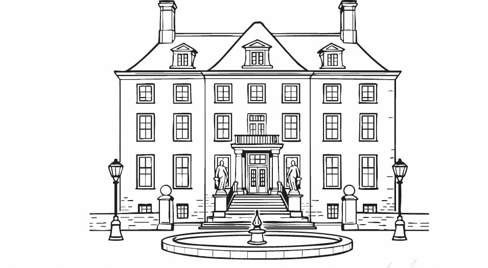

9 juli 2026

Lieve daggasten,
Op 9 juli geven Annaï & Eelco elkaar het jawoord! Ze kijken er enorm naar uit om dit samen met jullie te vieren. Hieronder vind je alle praktische informatie voor de grote dag.
Ontvangst
Zorg dat je tussen 11.15 en 11.30 uur aanwezig bent, zodat we op tijd klaarstaan om het bruidspaar te begroeten. Omdat Annaï & Eelco voorafgaand nog met z’n tweeën foto’s maken op de locatie, vragen we je om echt pas vanaf 11.15 uur aan te komen en liever niet eerder.
Parkeren
Bij Buitenplaats Amerongen kun je parkeren op de parkeerplaats direct tegenover het landgoed. Mocht daar geen plek meer zijn, dan is er vaak nog ruimte in de Drostestraat of op het parkeerterrein bij de Andrieskerk in het dorp.
Afmelden en dieetwensen
Mocht je niet of slechts een gedeelte van de dag aanwezig kunnen zijn, laat het ons dan op tijd weten. Ook horen we het het graag op tijd als je specifieke dieetwensen of allergieën hebt.
Foto’s
Er is de hele dag een professionele fotograaf aanwezig om alle bijzondere momenten vast te leggen. Het bruidspaar vraagt je dan ook om (vooral tijdens de ceremonie) je telefoon in je zak te houden en volop van het moment te genieten. Daarnaast de vriendelijke vraag om geen foto’s van het bruidspaar op social media te plaatsen voordat zij dit zelf hebben gedaan.
Speeches
Gedurende de dag is er gelegenheid voor een speech of een kort stukje. Wil je iets doen? Meld dit dan tijdig bij de ceremoniemeesters.
Cadeautips
Je aanwezigheid is natuurlijk het allermooiste geschenk! Wil je toch graag iets geven? Kijk dan op hun wensenlijst. Een bijdrage in de vorm van een envelopje wordt ook zeer gewaardeerd; hiermee kunnen zij een onvergetelijke huwelijksreis plannen.
Een verrassing voor het bruidspaar
Annaï & Eelco houden enorm van een goed wijntje en de Italiaanse keuken. Daarom willen we hen aan het eind van de dag verrassen met een goed gevuld borrelpakket. We vragen elke gast om hun favoriete fles wijn or een lekker Italiaans product (bijvoorbeeld van een lokale speciaalzaak) mee te nemen om aan dit pakket toe te voegen!
We zien enorm naar deze dag uit, tot 9 juli!
Marlijn van Woerden
Fie Balkenende-Bos
06-20563632